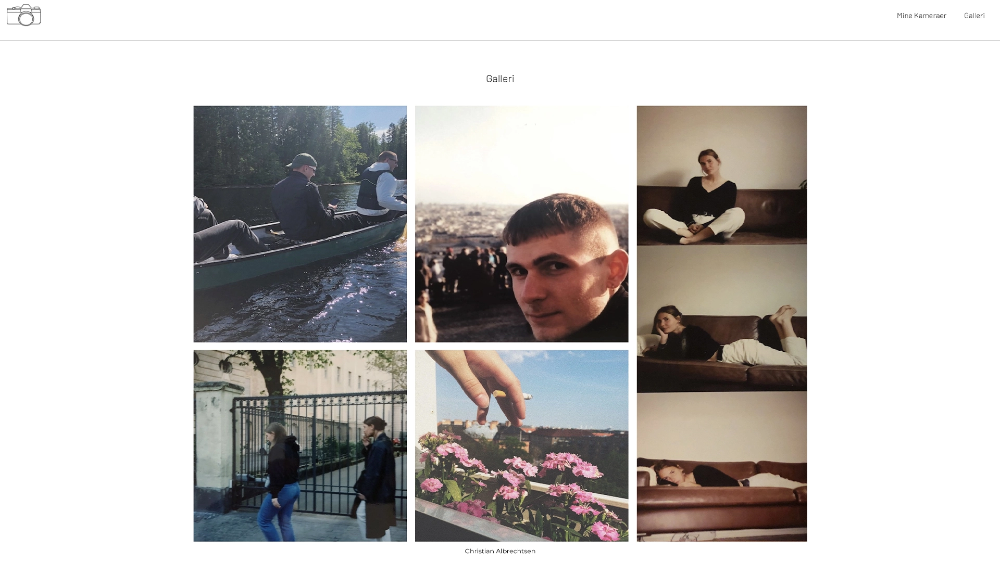
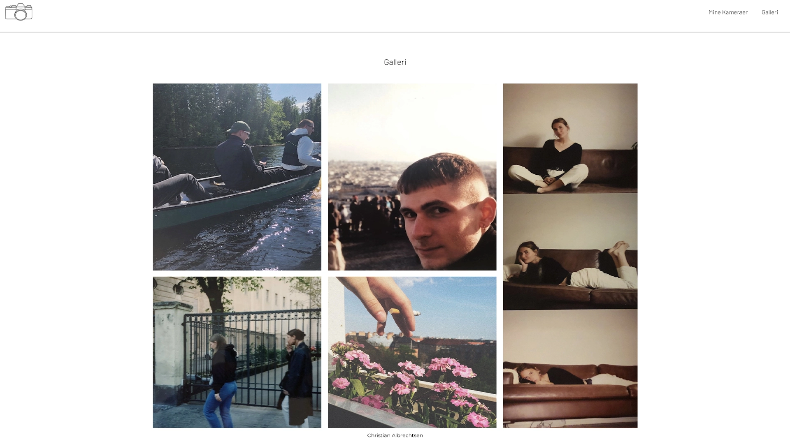

Grundlæggende Web
Tema 2 var det første forløb vi havde på første semester af Multimediedesigner uddannelsen på KEA.
Her gik vi hurtigt i
gang med at blive introduceret til uddannelsen, hvilke kompetencer vi ville få, samt introduktionen
til de programmer vi
skulle bruge.
Under tema 2 lærte vi om de grundlæggende designprincipper og basis programmering af digitale
brugergrænseflader. Dette
betød altså introduktionen til programmer som VS code, her også om HTML og CSS, hvilket er basen for
hele uddannelsen.
Derudover blev vi også introduceret til Adobe programmerne, blandt andet XD og Photoshop.
Den første større opgave vi fik, var studiestartsprøven. Her blev vi introduceret til
layoutdiagrammer og wireframes,
som vi skulle følge, for at løse opgaven med vores nye HTML og CSS-kompetencer.
Dette var springbrættet til vores næste opgave, hvor vi skulle lave vores eget Emnesite, med et
selvvalgt emne. Her
skulle vi selv lave layoutdiagrammer, wireframes, style tile og moodboard mm. Dette var en sjov
opgave, da man skulle
gøre sig nogle overvejelser, for at finde ud af, hvad der fungerede, og hvad der ikke gjorde på
hjemmesiden. Jeg valgte
personligt at lave en website der omhandlede fotografering, med analoge kamera, også kaldet 35mm
kamera. Her lavede jeg
et billede galleri, med nogle af mine egne billeder, ved hjælp af Grid.